The
Burnap Sisters:
Elizabeth, Ruth, Rebecca, Abigail, Susan and Lucy |
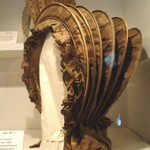 |
The daughters of
Jacob Burnap, Merrimack's first settled minister, were the town's
first business women. Elizabeth (who later married Hon. Joseph Read,
Ruth, Hannah (who married Samuel Buel), Rebecca, Abigail, Susan,
and Lucy (who married Hon. Joseph Read) discovered a special kind
of grass they called "Dunstable Straw" and wove it to
create beautiful "Leghorn hats."
According to a history written in 1946 by Mattie (Kilborn) Webster:
"Some of these bonnets were of black leghorn straw trimmed
with peach colored crepe, and crowned with a beautiful bouquet of
half-blown roses, lilacs and field flowers. They were often ornamented
with a bow of ribbon, long ends or streamers on one side. A bouquet
of wild poppies was sometimes placed in front surmounted by a plume
of marabout feathers. The ribbon was either straw colored or striped.
A little later the style changed. Pieces of brim was cut away at
the back and drawn up at the crown with a large bow. Strings and
rosettes were over the right ear. Some were sold in Boston for as
much as $50. John Stark bought one for his wife Molly. They not
only made bonnets but other things from grass or plated straw."
Norfolk County Advertiser, August 1821. Reprinted in Boston Commercial
Gazette (Boston MA), 2 August 1821, Volume 58, Issue 10, page 1.
"On Monday last was sold at auction at Merchant's Hall the
elegant Bonnet which has been for several days exhibited at the
store of Messrs. Hall J. Howe & Co., made by Misses Bernaps
of Merrimack, N.H., of a wild grass discovered by them in that town.
It was knocked off to Josiah Bradlee for Fifty Dollars. The execution
of the Bonnet was very superior to the one lately sent to England
from Connecticut. We understand that one of the above mentioned
young ladies is now visiting at Medford and that the money was presented
to her yesterday afternoon. Thus shall the skill and industry of
our countrywomen ever be rewarded."
Although Merrimack claimed the first bonnet of this type, a Sophia
Woodhouse of Wethersfield Connecticut, who had a similar business,
patented her design in 1821.
SEE
the Burnap Genealogy
| Emma
Cross |

Photograph
of Emma Cross
courtesy of the Merrimack (NH) Public Library |
Emma Augusta
Cross, daughter of Joseph & Deborah P. (Wilder) Cross was
b. 6 June 1850 in Manchester NH, and died 7 November 1933 in Merrimack
NH. She was a direct descendant of Nathan Cross, of Old Dunstable,
who was attacked while making turpentine in the woods, and taken
captive by the Indians.
She graduated from the Manchester High School in1868. She was
elected to serve as an assistant teacher for the intermediate
school the following year. In 1870, after attending training institutes,
the Manchester School Committee awarded her a teaching certificate
for the intermediate school, entitling her to a position as a
full teacher. She remained in that position until 1875, when she
gave up her job to help her parents set up a farm in Merrimack,
NH.
In 1884, she
removed to Boston, where she was employed as a photo-retoucher.
Also while in Boston, she attended Boston's Evening Drawing Classes,
which she successfully completed and was presented with a diploma
in May 1886.
Around 1895,
she returned to Merrimack, where she made the farmhouse the temporary
home for her two nephews and her often-traveling artist brothers.
She provided room for Merrimack's
Public Library in the front room of her house on Loop
Road, and was appointed library director when the library was
moved to a more public building (In 1907 the library and its 3,000
volumes were moved to rented quarters in Ayers' Store).
Emma Cross
also served on Merrimack's school board. She is buried in Pine
Grove Cemetery, Manchester NH. A collection of some of her and
her sibling's artistic creations may be found in a collection
at the American Antiquarian Society in Worcester, MA. A framed
photograph of her is located in the Merrimack Public Library.
|
Frank
French
|

1923 Self Portrait of Frank French |
Frank
French, son of Hiram & Lydia Wolcot (Batchelder) French, was
born 22 May 1850 in the Pittsfield/Loudon area of Merrimack County,
New Hampshire, and died 20 Feb 1933 in the Reeds Ferry section of
Merrimack, New Hampshire. He married about 1875 to Alice Hendricks.
They had two children: Frank Allison French and Mabel Edna French.
This noted artist is considered the "dean of American woodcarvers."French
also did commendable work as a painter. While serving as the art
director for the Manchester "Mirror and Farmer" under
John B. Clarke, he held an exhibition of paintings by Boston artists
to stimulate art interest in Manchester, New Hampshire. This was
the first fine art exhibit in the city, and soon after, he helped
organize the Manchester Art Association.
By 1880 French
was working on a regular basis for Harper's New Monthly Magazine,
mostly producing the engraved reproductions of paintings for which
he was highly regarded. His major work, the book 'Home Fairies
and Heart Flowers: Twenty Studies of Children's Heads,' was
published in 1887 by Harper and Brothers; the models for some of
the heads were his own children.
In 1893, he
was awarded a medal at the Columbian Exposition in Chicago, and
his engraving of Deschamps' "Beggar Girl" won the gold
medal at the St. Louis Exposition in 1904. Many of his works are
part of the Currier
Art Gallery's permanent collection in Manchester. N.H.
Directly
below are links to some of Frank French's work:
-
MONOGRAPHS ON AMERICAN WOOD ENGRAVERS: FRANK FRENCH, by George
Howes Whittle, from "Printing Art," Volume XXXI, March-August
1918 (PDF file format)
Wood
Engravers in Camp, by Frank French, from The Century Illustrated
Monthly Magazine, May to October 1889 (PDF File Format)
- Online e-book
'Home
Fairies and Heart Flowers: Twenty Studies of Children's Heads,
|
Arthur
Gilbert Gordon
1874-1958
|
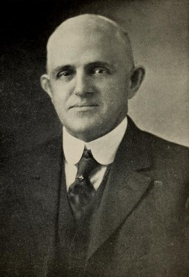 |
Mr. Arthur Gilbert
Gordon, son of Francis A. & Martha D. (McGaw) Gordon, was born
27 January 1876 in Merrimack, Hillsborough Co. NH, and died 27 July
1958. His family before him had been active in town affairs. Mr.
Gordon had served as a member of the Board of Selectmen and as representative
to the Legislature and had devoted much of his time to the growth
and development of our committee. He was instrumental in organizing
Merrimack's first volunteer fire department in 1924. At the organizational
meeting of the department Josiah N. Henderson was elected Chief
and Arthur G. Gordon its Deputy Chief which office he held until
his retirement in 1949. He served the town as its forest fire warden
for many years. His interest in the growth and development of Merrimack
were not confined to the Fire Department alone. He devoted much
of his time to the Last Rest Cemetery Association, Wheeler Chapel,
to the industrial aspects of the Town's growth, and was, at the
time of his death, Senior Deacon of the Merrimack Congregational
Church. The Town's new fire station will long serve as a memorial
to his many civic efforts.
Merrimack's fire station was given to the Town of Merrimack by Bertha
Lowell Gordon in memory of her husband, Arthur G. Gordon, February
21, 1960.
Sources: Annual Report of the Town of Merrimack NH for the year
ending June 30, 1959, and independent research. SEE
the Gordon Family Genealogy.
|
Bertha
L. (Lowell) Gordon
1874-1960
|
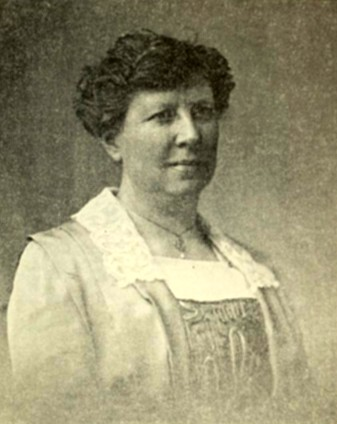 |
Mrs. Bertha
(Lowell) Gordon was born 7 Apr 1874 in Reeds Ferry (Merrimack)
NH, daughter of Levi F. & Hannah B. (Hutchinson) Lowell and
d. April 4, 1960, age 85.In the library report for 1960 it is
fitting that the town made note of her passing. She, along with
her sister, Mrs. Mabel Haseltine, in 1924 gave to the town of
Merrimack, the library in memory of their parents, Mr. and Mrs.
Levi Lowell. She married Albert Gilbert Gordon (biography and
photograph above) in whose memory she donated money to build the
Merrimack Fire Station and the Congregational Church parsonage.
ALSO SEE the Lowell
family genealogy.
[photo from annual report of the town of Merrimack NH 1960]
---Obituary, Nashua Telegraph, Monday April 4, 1960---
Merrimack, April 4 -- Mrs. Bertha (Lowell) Gordon, life-long resident
and widow of Arthur G. Gordon, died at her home Daniel Webster
Highway Reeds Ferry, yesterday morning after a long illness. Mrs.
Gordon and her late husband had been town benefactors for many
years. In 1924 Mrs. Gordon and her sister the late Mrs. Mabel
L. Haseltine, gave the Lowell Memorial Library to the town. More
recently Mrs. Gordon gave the Arthur G. Gordon Memorial Fire Station
in memory of her husband, and it was also through her interest
and help that a new Merrimack Congregational church parsonage
is in the process of being completed. She was a member of the
Merrimack Congregational Church and of its Ladies Aid Society;
member of Puritan Lodge of Rebekahs and a charter member of the
Reeds Ferry Women's club. She was a graduate of the Tilton school
in Tilton and when it was a seminary, and attended Mount Holyoke
college, South Hadley, Mass.
|
Abbie
M. Griffin
(photograph
provided by Robert Winer, via Ruth Liberty)
|
click
on the photo to see larger
|
Abbie May
Griffin was the daughter of George Byron & Sarah Frances
(Spalding) Griffin of Merrimack NH. She was born on May 4, 1874
in Merrimack, New Hampshire and died February 3, 1968 at Memorial
Hospital in Nashua NH. Her father was a local grocer, and she
was one of three daughters born into this family. They lived on
a farm located on the Daniel Webster Highway (in the location
of the current Residence and Comfort Inns). She is buried in Reeds
Cemetery on Camp Sargent Road.
She lived her entire life in the town of Merrimack, very much
interested in the welfare of her neighbors. At one point she learned
that the local school band did not have enough funds to attend
a national competition, and she provided them. Upon her death
it was learned she had established trust funds through her will
to assist the town, Merrimack residents who could not afford health
care, offer scholarships to local young people for college, and
funds for the police and fire departments. Those funds continue
to benefit Merrimack residents today.
On September 12, 1996, on Merrimack's 250th anniversary, the Board
of Selectmen named the bandstand area, near the town hall, the
"Abbie Griffin Park" in her honor. (The bandstand area
was made possible by the generous financial donations of local
residents, business owners and volunteers). This park is a gathering
place for Merrimack's musical and social events.
A 17-page booklet about Abbie Griffin,
with photographs, was recently written by Ruth Liberty. A copy
is available for $5.00 at the Merrimack Historical Society.
|
Marguerite
(Bushee) Henderson
1875-1970
|
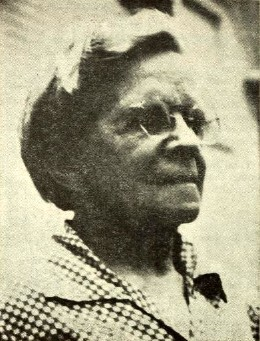
|
Marguerite Miller
(Bushee) Henderson, dau of Capt.
Andrew T. & Alice (Miller) Bushee was born about 1875 in
Donaldsonville, Louisianna and died June 1970 in Hampton NH at the
age of 94. She married 14 April 1900 in NH to Josiah N. Henderson,
son of William & Annah E. (Mitchell) Henderson. In 1927 he was
foreman at D.P. Jones.
She lived in Merrimack, New Hampshire for 76 years, and at the time
of her death was the town's second oldest citizen. She had resided
in Rye, NH with her daughter for four years. A graduate of Plymouth
Normal School before the turn of the century, she taught in New
Boston and Merrimack Schools. She was the librarian of Lowell Memorial
Library in Merrimack for 35 years. She was a member of the First
Congregational Church, Puritan Rebekah Lodge and the Thornton Grange.
She was a charter member and first president of the Merrimack Community
Club. She was survived by her son, Lawrence W. Henderson; two daughters
Mrs. Ruth Rarer and Mrs. Lorraine Cameron.
The Town Report of Merrimack NH duly notes: "Mrs. Marguerite
Henderson, former librarian, for approximately 37 years has resigned.
She had been associated with the library about 50 years, serving
as an assistant to Miss Emma Cross, then librarian. Mrs. Henderson
was a conscientious and untiring worker, giving much time and thought
to the library in all its aspects for the good of the people and
the town."
Brigadier
General
Edward J. Haseltine
(Photograph from collection
of Merrimack Historical Society) |
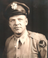
click
on the photo to see larger
|
Brigadier
General Edward J. Haseltine, U.S. Air Force, retired, was
born in Merrimack NH, 23 January 1909, the son of John and Mabel
(Lowell) Haseltine. He graduated from Merrimack High School class
of 1927, and the University of New Hampshire in 1931 (Bachelor
of Science in Economics). At that time he received an ROTC commission
as a second lieutenant in the Army Infantry, and was assigned
to the Army Air Corps in 1942. [See
more information about his military service here].
After an extensive
career with the U.S. Air Force, General Haseltine hae been active
in many civic groups and state legislative committees dealing
with labor issues, flood control and community developments.
He worked
for the N.H. Bureau of Labor Unemployment Compensation from 1936-42.
In 1981 he was serving as Chairman of the Public Employee Labor
Relations Board for NH. He was appointed a member of the Administrative
Committee on Municipal Courts by the New Hampshire Supreme Court
and had served as a Merrimack Municipal Court Judge. During his
tensure, he devoted much of the court's time to study juvenile
problems in the community.
General Haseltine
served as the Chairman of the Board of Selectmen and director
of the Merrimack Medical Center. He also served as a State Representative.
In Sept of 1965 he was master of ceremonies at the dedication
of the (then) new Merrimack Post Office. He was dubbed "Mr.
Merrimack" and was honored at a testimonial banquet attended
by about 350 guests, in recognition of his 23 years of devoted
service to the town of Merrimack.
He was also
a local businessman, and treasurer of a family-owned business,Haseltine
Brothers, a lumber manufacturing firm in Merrimack NH. His many
contributions to this community will not be forgotten. General
Haseltine died on November 11, 1998 in New London, New Hampshire,
and is buried at Last Rest Cemetery in Merrimack NH.
| Martha
F. (Marsh) Jones |
 |
Martha
"Mattie" Frances (Marsh) Jones was a teacher, author
and poet. For many years using the pen name, "Nettie Vernon"
her writings were published in many of the leading magazines and
literary papers of the time, including Arthur's Home Magazine.
Her official biography, published in Granite State Magazine of June
1906 states, "She was an estimable woman." [Read
two of her poems].
Martha Frances
Marsh, the daughter of Deacon Enoch S. Marsh of Hudson NH was
b. 20 April 1836 at Hudson NH. She married 3 May 1864 in Hudson,
NH to James Thornton Jones, the son of David & Dorothy (Tewksbury)
Jones. She was educated at the Nashua Literary Institution and
at Appleton Academy in Mont Vernon NH, preparing her to teach
school. As a married couple James & Mattie Jones at first
removed to California where he had been employed as a teacher,
and where two of their children were born. They returned to New
Hampshire in 1875, and resided in Merrimack NH. She d. 5 Feb 1906
in Merrimack NH. She and her husband are buried in Last Rest Cemetery.
They had 2 sons, James E. and Leslie E., and two daughters, Grace
M. (who married Louis Hoffman) and Idella M.
See
the Jones Family Genealogy
| Mattie
(Kilborn) Webster |
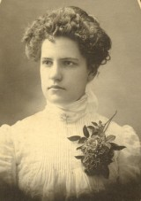 |
Mattie (Kilborn) Webster, daughter of Charles Albert & Minnie
Almira (Long) Kilborn was born 17 April 1885 in Webster, Merrimack
Co., NH. Following her mother's death when she was 5 years old,
her father remarried to Emma Jane Fretts of Merrimack, and the family
moved here. In 1911 she married Clarence L. Webster in Merrimack,
New Hampshire. He was the station agent and telegraph operator for
the B&M Railroad at the Reeds Ferry Station. They lived in a
house at the corner of Depot and Pleasant Streets.
Mattie attended
the Merrimack schools. Upon graduating from McGaw Institute in
1903 she taught in Bennington NH schools, and soon was teaching
school in Merrimack. She also taught English to newly arrived
immigrants at the Institute of Arts and Sciences in Manchester,
NH.
In addition
to raising her son and three daughters, Mattie found time to be
the first president and one of the founders of the Reeds Ferry
Women's Club, a member of the Missionary Society, and of the Ladies
Aid Society of the Merrimack Congregational Church. She was a
member of the Puritan Rebekah Lodge, and the Narragansett Grange
of Bedford. She was a prize winner in rug hooking.
She was one
of Merrimack's first historians, compiling and narrating the the
history of the town during the Bicentennial celebration in 1946.
She died in Merrimack on 18 April 1964, and is buried in Last
Rest Cemetery in Merrimack. She had four children, Berwin H. Webster,
Anna (Webster) Watkins, Ruth (Webster) Beard, and Margaret Webster.
Walter
Kittredge, ' The Minstrel of Merrimack' was born on Bedford Road
in the northern part of Merrimack known as Reed's Ferry on October
8, 1834. He was the tenth of eleven children of Eri and Lucretia
(Woods) Kittredge.
Walter Kittredge
was a self taught musician, playing the violin, seraphine, and
the meloden. He made many of his instruments from things he found
growing in the fields near his home. His first instrument was
made from the stock of a seed onion. He traveled as a minstrel
both alone and with the famous Hutchinson family of singers of
Milford NH. Many of their engagements were held at the Merrimack
Hotel, also known as the McConihe Tavern. The hotel was located
where the Library is today. It was moved across the street when
the library was built and became a private residence.
In 1860, he
married Annie Fairfield of New Boston, NH and built his unusual
home on Bedford Road only a mile from where he grew up. It was
here that he farmed between musical engagements. Walter and Annie
had three children, Clara S., Walter E., and Annie.
It was about
this time that he was struck with rheumatic fever, the results
of this illness kept him from military service during the Civil
War. However he served through his music, writing over five hundred
songs and ballads. Many of the songs including "The War Will
Soon Be Over", "When They Come Marching Home",
and the world famous "Tenting Tonight On The Old Camp Ground"
were sung by both the North and the South during the war.
In addition
to his music, Walter Kittredge was a known temperance and abolitionist
speaker famous for his precise diction and clarity of words.
At home in
Reed's Ferry, he held several public offices, was an active member
of the First Congregational Church and a charter member of the
Thornton Grange of Merrimack. It was at the 30th anniversary meeting
of the Grange that he sang his last song.
Walter Kittredge
died at his home on Bedford Road, July 8, 1905. He was seventy
years of age. He is buried in Last Rest Cemetery on Baboosic Lake
Road in Merrimack. A bronze marker graces the lobby of the State
House in Concord in his memory.
TENTING
TONIGHT ON THE OLD CAMP GROUND (LYRICS)
We're
tenting tonight on the old camp ground,
Give us a song to cheer
Our weary hearts, a song of home,
And friend we love so dear.
(Chorus)
Many are the hearts that are weary tonight,
Wishing for the war to cease;
Many are the hearts that are looking for the right
To see the dawn of peace.
Tenting tonight, tenting tonight,
Tenting on the old camp ground
We've been
tenting tonight on the old camp ground,
Thinking of days gone by,
Of the loved ones at home that gave us the hand
And the tear that said "Goodbye!"
(Chorus)
We are tired
of war on the old camp ground,
Many are dead and gone,
Of the brave and true who've left their homes,
Others been wounded long.
(Chorus)
We've been
fighting today on the old camp ground,
Many are lying near;
Some are dead and some are dying,
Many are in tears.
Many are the
heart who are weary tonight,
Wishing for the war to cease;
Many are the hearts that are looking for the right
To see the dawn of peace
Dying tonight, dying tonight,
Dying on the old camp ground.
Additional
articles about Walter Kittredge:
"Tenting
on the Old Camp Ground," and Its Composer, by Gordon Hall
Gerould, New England Monthly, Vol 20, March-August 1899, page 723-731.
(PDF file format)
|
Mabel
Lucretia (Lowell) Haseltine
1870-1937
|
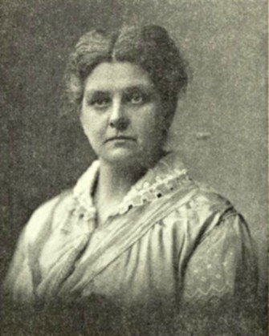 |
Mabel Lucretia
(Lowell) Haseltine, dau of Levi & Hannah B. (Hutchinson)
Lowell, was born 15 Nov 1870 in Brookline, NH, and d. 20 Jan 1937
in Merrimack, New Hampshire. She married 22 Nov 1892 in Reeds Ferry
NH to John Edward Haseltine, son of James G. & Mary J. Haseltine
of Amherst NH. From the 1890's through the 1930s this family was
residing in Merrimack NH, and actively supporting the town through
personal philanthropy. She, along with her sister, Mrs. Bertha Gordon,
in 1924 gave to the town of Merrimack, the library in memory of
their parents, Mr. and Mrs. Levi Lowell.
An additional biography of her son, Edward Haseltine can be found
on this page. [see
genealogy of the Lowell family].
[photo from
annual report of the town of Merrimack NH 1960]
|
Claude
Mahlon Maker
1894-1973
|
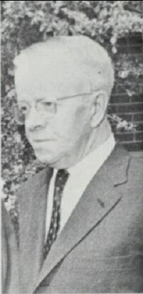
|
Claude Mahlon Maker, son of Elwin C. & Margaret A. (Wilson)
Maker was b. 24 January 1894, and d. 24 March 1973 in Nashua NH,
at the age of 79. He married 1 Aug 1917 at Pembroke, NH to Flora
E. Cushing, daughter of Charles E. & Rosie M. (Clark) Cushing.
He was a resident of Merrimack for over 60 years and served 30 years
as a member of the School Board. For fifteen years he was the Town
Tax Collector and for 24 years the Town Clerk. He also served as
a representative in the State Legislature. He was a member of the
New Hampshire Town Clerks Association, a member of the First Congregational
Church, and was active in the Souhegan Lodge, I.O.O.F and the Puritan
Rebekah Lodge of Merrimack, and the Ancient York Lodge, F. and A.M.
of Nashua. He was also a Justice of the Peace.
[SEE
the MAKER FAMILY GENEALOGY]
|
Irving
F. Mower
1907-1973
|
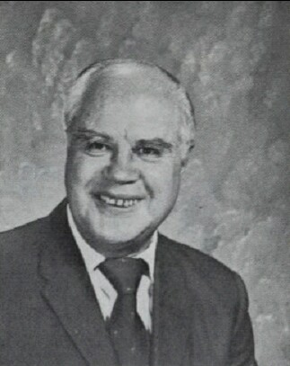 |
Irving F.
Mower, son
of Charles M. & Ida May (Litchfield) Mower was born on February
16, 1907 in Portland Maine, and died 16 October 1973 at the age
of 67 in Manchester NH (hospital). He married 12 April 1934 at Exeter,
NH to Edna M. Esty.
Mr. Mower served the Town of Merrimack twenty-five years as trustee
and treasurer of the Lowell Memorial Library. A resident of the
Town for thirty-five years, he also served as treasurer of the Merrimack
Historical Society. A retired navy lieutenant commander with World
War II service in the Atlantic and Pacific theaters, Mower was a
charter member and first commander of the Merrimack Post of the
VFW, and a post commander of the local post of the American Legion.
He was a member of the First Congregational Church.
[SEE
Mower Genealogy]
|
James Mastricola
(Giacamo Mastrocola)
|
 |
Giacamo Mastrocola
aka James Mastricola was born 27 March 1878 in Casacalenda,
Italy. He immigrated to Montreal, Canada when he was 17 years old,
working on the railroad. Afterwards moving to Nashua NH, he sold
fruit from a pushcart with his brother, Peter. (Peter was killed
in an accident in 1925, aged 53).
After many
years of hard work, James Mastricola was able to buy a farm in
Merrimack, New Hampshire where he then lived for over 50 years.
When he died at age 80 on 6 March 1958 it was learned that he
had invested well, accumulating the small fortune of $143,000.
Never having
had formal schooling, he valued education, and in his will he
left his estate to the town of Merrimack to build a school. First
used as a high school, the James Mastricola School became Merrimack's
junior high school in 1966. In 1973 after more construction was
completed, the school was renamed the James Mastricola Middle
School in his honor. Today there are two schools named after Mr.
Mastricola: James Mastricola Elementary School 7 School Street,
and James Mastricola Upper Elementary School, 26 Baboosic Lake
Road, both in Merrimack NH.
A portrait of James Mastricola hangs in the school today, inspiring
all who look at it, of a man who had great faith in his adopted
country. The
Nashua Corporation is now located on the property of the Mastricola
farm.
|
Maggie
Parker
Educator, Actress
|
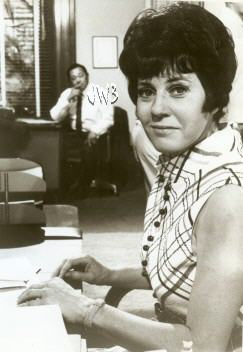 |
Maggi Parker
was born in Nashua, New Hampshire in 1927, the daughter of Charles
R. & Susan B. (Patterson) Parker. She was raised in her parent's
home on Boston Post Road in South Merrimack, New Hampshire. It
appears that at an early age she was an individualist, plotting
a unique path. In a 1969 TV Guide article She related: "Nobody
smokes and drinks in my family but me." In her younger days
at home, whenever she came in late, her mother took a branch off
a lilac bush and hit her with it. "After age 12, there wasn't
much left of that lilac bush," Maggi said. In a later article
her father Charles says that the line about the lilac bush was
a "wee bit exaggerated," but agreed that she and her
brother were raised in a strict household.
Her work as
an educator is impressive. In addition to teaching school in New
England, she traveled and was principal on an airbase in Japan.
Then she traveled to Madrid, Spain, where she taught school. From
there she became a principal of a school of the American School
for Air Force Dependant Children on the Island of Mallorca. Her
focus and expertise turned to education for emotionally disturbed
children and young adults.
In 1969 Maggie
attributed her success as a teacher to her interest in acting.
Although she majored in education at Keene State College in her
native New Hampshire and at Boston University, she also studied
drama, and she says, "Love of the theater made me a good
teacher. Can you imagine Bob Hope as a teacher? Kids would flock
to his classes - it's the stimulation."
She moved
to Los Angeles to work on her doctorate at the University of Southern
California. . There she was U.S. Assistant Professor of Education
at California State University, Los Angeles session-Summer Session.
She was there to study school administration, but instead married
in 1963 and the following year moved to a location she fell in
love with-Hawaii. Although she has continued to live in that island
paradise for 49 years, she has visited New Hampshire several times
to attend alumni celebrations for Keene State College (as recently
at 2008), and also to travel in Europe (including Ireland; a river
ship--The Bizet, in Vienna, sailing up the Danube, Main, and Rhine
rivers for 14 days to Amsterdam).
Although she has continued to live in Hawaii for 49 years, she
has visited New Hampshire several times to attend alumni celebrations
for Keene State College (as recently
at 2008), and also to travel in Europe (including Ireland; a river
ship--The Bizet, in Vienna, sailing up the Danube, Main, and Rhine
rivers for 14 days to Amsterdam).
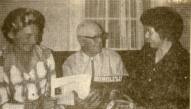
1970 Photograph
from the Nashua Telegraph picturing left to right:
Princess Abigail Kawananakoa, Charles R. Parker (Maggi's father),
and Maggi Parker, at the Parker home in South Merrimack NH.
She was on the board of directors of Friends of Iolani Palace,
working on the restoration of the palace. She assisted Harriet
Lanihau Makekau, one of the Hawaiian royal family, to raise money
for the Iolani Palace, and was on the board of the Kawananakoa
Foundation until 1998. In September 1970 she escorted Princess
Abigail Kinoiki Kawanakoa, a member of America's only royal family,
who visited New Hampshire and stopped with Maggi at the Parker
homestead in South Merrimack, on their way to Europe. During this
trip they hoped to locate heirlooms of the Hawaiian Royal family.
At the young age of 86 she has not retired. She continues to consult
three days a week at the Abigail K. Kawananakoa Foundation in
Honolulu, Hawaii.
Maggi is a
10th generation descendant of Deacon Thomas & Amy Parker of
Lynn and Wakefield, Massachusetts who immigrated in 1635 on the
ship "Susan and Ellen." She is also a 7th generation
descendant of William & Elizabeth (Boyd) Patterson He came
from the parish of Priestland, town of Glenluce, county of Antrim
Ireland to Londonderry NH about the year 1724 and settled on Patterson's
Hill.
--Recap of Maggie Parker's Accomplishments and Interests--
Hobbies
and Talents:
- active in the Nashua High School band, playing the trumpet
- speaks fluent Japanese
Schooling:
- attended grammar school in South Merrimack, and Merrimack NH
- 1944, diploma, Nashua High School, Nashua NH
- 1948, Bachelors of Arts, Education - Keene State College, Keene,
NH
- Master of Education in School Administration, Boston University
Professional
Work:
- Educator, Nashua, NH and Cape Code, MA
- Principal of the Kimball-Webster School in Hudson, NH.
- Principal of an elementary school on an airbase in Japan.
- Educator at a school in Madrid, Spain
- Principal of a school of the American School for Air Force Dependant
Children on the Island of Mallorca.
- U.S. Assistant Professor of Education at California State University,
Los Angeles session-Summer Session
- Co-founder and partner in the Parker-Ames Center in Honolulu,
Hawaii which offered psychological and educational services to
emotionally disturbed children and young adults
Acting:
- performed in Grange shows in Merrimack NH as a youngster
- performed with the Hudson Players, an amateur theater group
in Hudson, NH
- Best Known For: starred in eleven episodes of the US crime drama
Hawaii Five-O during the years 1968 and 1969, playing the secretary,
May, a co-star to her TV-boss, Jack Lord.
- Television: I Dream of Jeannie, which did some shooting in Hawaii
- Movies: I Sailed to Tahiti with an All-Girl Crew, Hawaii, and
Paradise Hawaiian Style
- plus many television and radio appearances, commercials, and
roles in local theatrical productions.
(Perhaps our
most well-know notable was the great Indian sachem, Passaconaway
("child of the bear"), leader of all the native Americans
inhabiting the Merrimack Valley.
In a treaty
with the General Court of Massachusetts on April 9, 1662, Passaconaway
formally made peace with the "white man" and was granted
a tract of land in Merrimack 3 miles long and 1 and a half miles
wide north of the Souhegan River. This tract included the two
river island of Minnehaha and Minnewawa. The formal request
made to Governor Endicott of Massachusetts was granted for 25
English pounds. The request is in the Massachusetts Archives.
A few years later this same piece of land was granted to an
Englishman.
It was rumored
that Passaconaway lived well past the age of 100 and possessed
magical powers. He was reported to have made water burn and
sticks turn into snakes. His treaty with the whites was prompted
by a vision with the "Great Spirit" who foretold their
great numbers.
Passaconaway
was believed to have fathered seven children. His second son
but third child, Wonalancet was his successor as leader of his
tribe. One of his daughters, Weetamo also had important positions
of leadership within the tribe.
On his death
the legend has it that he was carried off to heaven from the
top of a white mountain on a sled drawn by wolves.
|
Betty
(Mason) Raymond
Merrimack's First Female Police Officer
|
 |
She was born
Betty Mae Mason in Damariscotta, ME on May 26, 1934, a daughter
of Carleton K. & Myrtle L. (Clifford) Mason. She moved to
Merrimack, NH with her family in 1946 and graduated from Merrimack
High School in 1952. She married Ernest "Ernie". Raymond
a life-long resident of Merrimack and remained in our town to
raise her family.
In the 1960's female police officers were uncommon. She was the
first woman to become a Merrimack Police Officer, serving from
1964 to 1986. She was also an original signer of the Merrimack
Fire Department Auxiliary charter, and one of its former presidents
(her husband Ernie was a call Captain for the Fire Department).
She was also active in the American Legion Auxiliary.
In addition to working as a police officer, she was a book keeper
for 52 years before she died 16 November 2007.
Her Mason family tree can be traced back to the 1700s in Carroll
County, New Hampshire.
| Forrest
Percival Sherman, Rear Admiral |
|
| |
|
This native
of Merrimack was born October 30, 1896 on Depot Street, son of
one of the headmasters of the McGaw Institute.
He was a
member of the Naval Academy class of 1917. A naval aviator from
1922, his peacetime service included aviation, surface, and
staff assignments.
He was captain
of the aircraft carrier "Wasp" (CV-7) when it
was sunk by three Japanese torpedo hits in the Solomon Islands
September 25, 1942. He was awarded the Navy Cross for his heroism
in command of the carrier. He later served as Chief
of Naval Operations, and the destroyer, "USS Forrest
Sherman" (DD-931) was named in his honor and launched February
5, 1955.
He died
July 22, 1951 in Naples, Italy. Admiral Sherman's framed photograph
hangs in the original lobby of the present Middle School, formerly
the high school.
His Sherman
ancestry hails back to the 1600s in Massachusetts, Philip
& Sarah (Odding) Shearman.
Louis
Sperry was presented with the Boston Post Cane on April 4th, 2002
at a ceremony held at the Merrimack Town Hall.
Louis Sperry
was born in Lincoln County, Kansas on March 16, 1908. He was
the second of eight children (five boys, three girls). Sperry
attended Sylvan Grove High School in Kansas, where he participated
in football, basketball, and track. He would have liked to play
baseball, but the school did not have a team. His first year
of high school, his father would not permit him to play football
because he was too small and worried he would get hurt. During
his second year of high school, the football coach sat down
with his father and convinced him Louis could play. The football
team had a shortage of pads, so he had to use the pads of the
players sitting on the bench. In some cases he used pads from
some of the larger guys on the team, which made the pads stick
out past his body on each side. He graduated from Sylvan Grove
in 1927.
He married
his first wife Pauline, with whom he later had one child who
died at birth.
His first
paying job was working for his uncle Lynn driving horses. For
10 days worth of work he received 3 stacks worth of quarters,
with each one totaling $2.00 at his best guess. His first impression
was the great amount of money it represented.
Louis took
a job on a three-square cattle farm in Kansas, which equates
to three square miles of territory he had to cover. He worked
through the dust bowl. Mr. Sperry recalls dust storms so severe,
someone lighting a cigarette 3 feet away looked like a flicker
of light miles in the distance. Mr. Sperry also worked odd jobs
for the railroad, which included track repair and worked in
a rock quarry. He then moved to Washington State, where he took
a job shucking oysters.
During the
depression Louis would often catch animals to sell their furs
for extra money. When he'd catch skunks he would keep them in
a pit until mid december when their pelts would be at their
thickest before claiming their hides.
In 1939,
Mr. Sperry moved to New York City, where he sold pharmaceutical
supplies to treat asthma. He then took a job in construction
on Long Island, NY. He also worked at this time in restaurants
as a cook.
In 1942,
Louis Sperry enrolled in the Marines to serve his country. His
troop was being prepared to be the fifth wave to invade Tokyo.
However, the bombing of Japan by U.S. forces cancelled this
mission. During his time in the Marines, he also served as a
cook.
After World
War II, Mr. Sperry moved to New Hampshire while he courted his
second wife Bessie. When he first settled into Merrimack, he
lived in a rooming house later known as Hannah Jack's Tavern.
At this time he worked for Bessie's family selling pharmaceuticals.
He and Bessie married and had four children together. Around
1949, Louis, his brother-in-law Bob Snapp, and family friend
Lenny Berry built the home he still lives in today on D.W. Highway.
After selling
pharmaceuticals, Louis took a position with Hood manufacturing
ice cream in their plant in Manchester,NH. When Hood closed
the plant, Hood reassigned all of its workers. When asked what
position he wanted to transfer into, Sperry decided he wanted
to take a position repairing refrigeration units. Hood asked,
"Do you know how?" and Sperry responded "No,
but do any of your employees come through the door with refrigeration
repair skills?" Hood replied "No, so you can have
the job." The new job took Louis to Boston, where he commuted
for a number of years from Merrimack daily. One day, he was
called in and transferred back to Manchester, where he completed
his career with Hood until age 65, when he was forced to retire.
He continued
to work in refrigeration repair through agencies for several
more years. He then went on to work as a cook in a restaurant
in Pembroke. He finally retired in 1995 after working at Alexandria's
supermarkets (now Hannaford) collecting shopping carts.
When asked
what Merrimack has become in his time here, he recalls watching
D.W. Highway grow up around him. When asked what is the one
thing he wants Merrimack to know from him, he replied "Merrimack
is full of really nice people."
For all
of Louis Sperry's hard work and loving life, he had much to
show for it. He enjoyed his gardens and made wind chimes. Also
In addition to his four children with Bessie, he left behind
eight grandchildren and six great-grandchildren.
Louis passed
away November 10th 2004. (Originally written by the Merrimack
Historical Society, June 6, 2004)
| Captain
James Sheppard Thornton |
|
| |
|
James
S. Thornton was born in Thornton's Ferry (Merrimack), NH on February
25, 1827. He was the great-grandson of Matthew Thornton, signer
of the Declaration of Independence. His father James B. Thornton
died in 1838, while ambassador to Peru. His upbringing was taken
over by future US president Franklin Pierce and Senator Atherton.
On January
15, 1841, at the age of 14, James was appointed a midshipman
in the United States Navy by Senator Atherton. He served on
the frigate Columbia and John Adams, a sloop converted to a
man-of-war. In 1846 hew was sent to the Naval Academy and in
1847 to sea during the war with Mexico.
In 1850
James Thornton was engaged in coast survey work in the Pacific
and after a dispute with his superior resigned from the Navy.
He spent the next three years surveying the gold fields of California
and in what is now Utah.
In February
1854 he was restored to his naval rank and went to sea aboard
the store-ship Relief serving in the waters around South America.
While on this duty he was wounded fighting a duel.
In 1857,
James Thornton returned to Merrimack and married his cousin,
Ellen Thornton Wood. The couple would have no children.
At the outbreak
of the Civil War Thornton, who was serving on the brig Bainbridge,
was transferred to Admiral David Farragut's flagship Hartford
as executive officer. He was aboard the Hartford during the
capture of New Orleans and served on this ship in subsequent
campaigns on the Mississippi River, including Vicksburg. It
was while aboard the Hartford that Thornton devised the scheme
to cover the sides of the ship with chains to repel cannon balls.
He received high praise from Farragut for the idea.
In August
1862 Thornton became commander of gunboat Winona which was stationed
off Mobile, Alabama. In December 1862 he was assigned as executive
officer the Kearsarge at the start of her cruise in search of
the Confederate raider. The battle between the Kearsarge and
the Alabama is one of the famous naval battles in American history.
The engagement took place in June, 1864 off the coast of France.
The commanding officer of the Kearsarge, Captain John Winslow,
in a report to Gideon Wells, the Secretary of War, singled out
Thornton's performance:
"It
would seem almost invidious to particularize the conduct of
any one man or officer in which all had done their duty with
a fortitude and coolness which can not be too highly praised,
but I feel it due to my executive officer, Lieutenant. Commander
Thornton, who superintended the working of the battery, to particularly
mention him for an example of coolness and encouragement of
the men while fighting, which contributed much toward the success
of the action."
Many of
the crew also credited Thornton with playing a major role in
the battle. The sinking of the Alabama was a major defeat for
the Confederate States and a major victory for the United States.
Thornton's naval career was undoubtedly helped by his participation
in the fight. For distinguished service in action, James Thornton
received a Congressional vote of thanks and was advanced over
others in his grade and given command of the Kearsarge.
After the
war, he was stationed at the Portsmouth Navy Yard from 1865
to 1873 where he was promoted to the rank of Captain in 1872.
In 1873
Captain Thornton was given command of the USS Monongahela for
a scientific expedition to Kerguelen's Land. The voyage was
undertaken with only the original charts made by Captain Cook.
His mission was a success but on the return voyage he was thrown
down by a sudden lurch of the ship and received a serious injury
to his spine. At Cape Town South Africa, he was sent home by
way of England. After being transported to Philadelphia, Captain
Thornton died at Germantown, PA on May 14, 1875 at the age of
48. His body was returned to Merrimack and he was buried in
Last Rest Cemetery. The US Navy recognized his distinguished
service by naming the torpedo boat, "The Thornton"
in his honor.
James S.
Thornton was the last descendent of Matthew Thornton to carry
the Thornton name.
Photographs above:
1)
James S. Thornton Portrait by U.D. Tenney, 1874
2)
James Thornton aboard the Kearsarge in 1864. Thornton is in
the center with beard.
| Matthew
Thornton
|
 Click
on the link to see larger likeness
Click
on the link to see larger likeness |
|
Matthew
Thornton was born in Ireland about 1714. In his lifetime, Matthew
Thornton was president of the Provincial Convention in 1775, was
the 1776 New Hampshire delegate to Congress, was judge of the
Superior Court of New Hampshire (he was a self-taught lawyer),
and successfully ran Thornton's Ferry after retiring from public
life.
He was distinguished
as a physician, judge, statesman, patriot of the Revolutionary
War, and as one of New Hampshire's delegates to sign the Declaration
of Independence. He was in his 60's when he served as a surgeon
during the Revolutionary War.
At the age
of 48 Matthew Thornton married Hannah Jack of Chester, NH who
was 18 at the time. Over the course of the next seven years
they had five children together, many of whom became prominent
in their own right.
In 1784,
after he signed the Declaration of Independence, he retired
from politics and in 1789, at the age of 75, moved with his
family to Merrimack. He settled on the farm formerly owned by
Edward Lutwyche and operated the ferry. From this time on the
ferry was called Thornton's Ferry, and that section of town
is still referred to as Thornton's Ferry. Matthew Thornton's
home was a large three story house with peaked roof. It stood
on the bank of the Merrimack River near the railroad tracks.
It was torn down about 1840 when the railroad depot was built.
He died
in Newburyport, Massachusetts June 24, 1803 at the age of 89
and is buried in Thornton Cemetery in Merrimack. A simple stone
inscribed "An Honest Man" marks his grave. In
1892 a monument was erected near the cemetery on route 3 in
his honor.
|
Marilyn
(Warren) Woods
|
 |
Marilyn
N. Warren, daughter of Oscar G. & Ida (Proctor) Warren,
was born 15 January 1915 in Hudson NH and died 12 June 1998.
She resided for many years at 57 Meetinghouse Road in Merrimack,
NH. She married 9 October 1948 in Merrimack NH to Adelbert Nelson
Woods, son of Sever Robertson & Tina (Blanchard) Woods.
She was
a paraplegic due to polio as a baby, and was a resident of a
Protestant orphanage in Nashua during middle and later childhood
years. She
became an activist for the handicapped.
She was a graduate of Nashua High School and Nashua Business
College, and later worked as a counselor for the State of New
Hampshire and also for Nashua High School. She was instrumental
in founding the Leticia Pratt Home for the Handicapped in Nashua
NH.
She served
in many leadership positions, advocating on behalf of the disabled.
She was a charter member and past president of the National
Association of the Physically Handicapped (NAPH), charter member
and past president of the Queen City Chapter of NAPH, member
and past president of President Eisenhower's United States Advisory
Council for the Handicapped, and member of former Governor John
Sununu's New Hampshire Advisory Council for the Handicapped.
She was
instrumental in arranging State of NH plates for the handicapped
and was awarded lifetime handicapped license plate #1 by Governor
John Sununu. She was the founder of New England Wheelchair Games
at Crotched Mountain Center.
In 1967
she won five medals in wheelchair games during Pan American
Paraplegic games in Canada. Later she took part in the International
Wheelchair Games in Israel in 1968 and won gold medals in archery,
shotput and javelin. She beat CBS's Charles Kuralt in handicapped
ping pong. Also in 1968 she attended the 20th Annual baseball
dinner sponsored by the Manchester Union Leader Fund, Inc. where
she was chosen the female athlete of the year.
She was a Mayflower descendant. For additional information,
and her Warren Family Tree, see
the article about her on Cow Hampshire: New Hampshire's History
Blog.


{kind=link}
{kind=link}